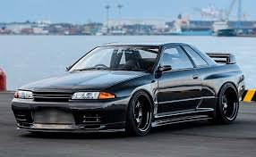
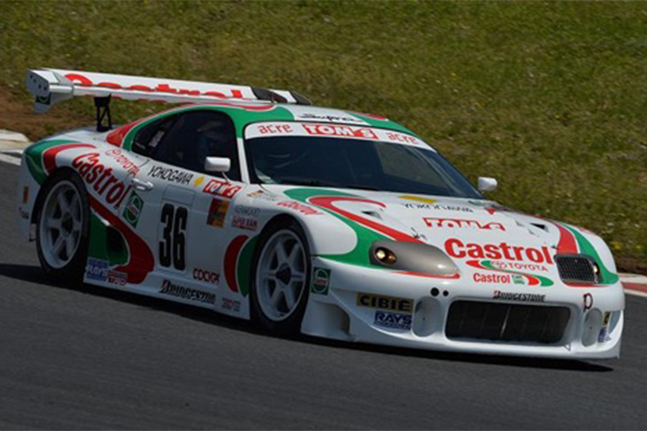
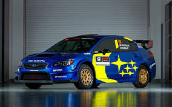
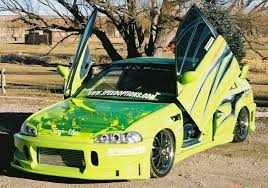
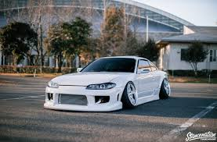

Car Culture
There is such a variety of different vehicles all over the world. You can go from Lifted Off-road vehicles to slammed stance cars. Car enthusiasts created meets to show off eachothers cars. These meets would usually have a specific type of car that you would have to bring such as a Japanese meet or a Off-road meet up. Here are the different type of vehicles you would find in Car Culture.
Clean JDM Cars

A clean JDM in the Car scene get lots of attention at car shows and meets. These people that have clean cars show that they have good tastes in aftermarket products and only add modifications that they need on their car.
Racing JDM Cars

The Castrol TOM’s Supra made its debut in the 1995 All-Japan Grand Touring Car Championship. This was the second full season of the new JGTC, and Toyota had their sights set on taking the fight to Nissan, whose fleet of mighty Skyline GT-Rs took the inaugural series title in ‘94 and utterly dominated the Japanese Touring Car Championship in the early ‘90s before. JDM Race cars are one of the most powerfull old school race cars out there. Such as Mazda rotaries with inbuilt turbos making crowds break their neaks since 1990s.
Off-Road JDM Cars

The Subaru WRX STI WRC car is one of the most Symbolic and memorable rally cars. It was the original turbocharged “pocket rocket” when launched in Japan in 1992 and since then, the Subaru WRX has become a global phenomenon. While most Japanese-made models were affordable runabouts, the Japanese also developed the off-road class. So almost all brands had quality off-road models that proved to be dependable and equal to American or European models. Over the years, Japanese off-road models turned to SUVs, so today there are dozens of Japanese models in that class.
Ricer JDM Cars

Riced out cars are known for having obnoxious and unnecessary modifications that don't help the car performance and aesthetically wise. They are usually frowned upon in the Car Community. The word R.I.C.E stands for Race Inspired Cosmetic Enhancement.
Stanced JDM Cars

Stanced cars are a very diverse part of the Car Culture. On one side you have the clean looking stanced cars that have almost perfect fitment and ride low and smoothly, and on the other side you have people who have ridiculous cambered wheels and physically cant drive that well. All round these cars are very nice and have a high appeal within the car community